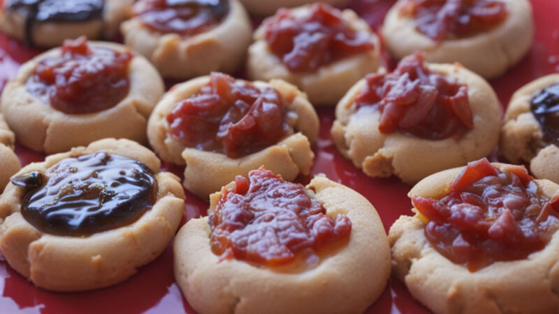

Quince jelly cookies
This will get you on the mood like Iorio.

These cookies are usually homemade, but there also can be purchased at bakeries or supermarkets
The tradition of eating "pepas de membrillo" is old, but specially in Argentina, and there are very easy to make
Ingredients
- 200 g of flour
- 100 g of butter
- 75 g of sugar
- Skin of one lemon or orange
- Half a spoon of baking powder
- One egg
- Quince jelly
- Boiling water (two spoons)
Steps for making the cookies
- In a bowl, mix the flour, the sugar and the baking powder. Add the butter in small pieces, and mix everything until you have a sandy texture
- Add the egg, and knead untill you have an homogenous dough
- Wrap the dough in paper film and refrigerate for 30 minutes. Meanwhile preahit the over to 355 °F
- Take small portions of daugh and make the cookies rolling them into balls, and then pressing them into parchtment paper. Make a small hole in the center with your thumb or the tip of a small spoon
- Mix the quince jelly with two spoons of boiling water and mix until a paste is formed. Refill the holes made in the cookies. If you want, you can throw on top a little bit of sugar
- Bake during 15-20 minutes, or until the base of the cookies are golden brown. Let cool before serving, and enjoy!
Back to Homepage